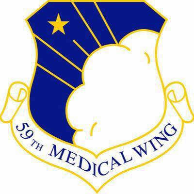

Set up and operate conventional, special purpose, CNC and Numerical Control (NC) machines to fabricate metallic and nonmetallic parts. Verify the conformance of finished work-piece to specifications, using measuring and inspection tools as necessary.
Career History
United Machine & Design Inc.
United States Air Force

Lackland AFB
Responsible for Maintaining and administrating medical equipment information systems and networks; performing preventive maintenance, calibration installation, and repair of wide range of biomedical devices.
Scott AFB

Manager of medical equipment repair center consisting of 10 technicians; responsible for maintaining equipment maintenance cycles, ensuring compliance with hospital/Joint Commission standards, and facilitating the growth of technicians under my supervision.
Agiliti
BMET II
Responsible for facilitating peer growth and development, providing cost-effective maintenance on company and customer-owned medical equipment to assure it is within manufacturer specifications.
BMET III Team Lead
Responsible for managing day to day operations of nineteen technicians to meet all customer deadlines, providing cost-effective maintenance on company and customer-owned medical equipment to assure it is functioning within manufacturer specifications. Current champion of all quarantine device reporting to executive level.
Clinical Engineering Supervisor
Floor supervisor with ten direct reports. Responsible for managing day to day operations of technicians to meet all customer deadlines. Responsible for overseeing cost-effective maintenance on company and customer-owned medical equipment to assure it is functioning within manufacturer specifications. Responsible for operating with budget constraints, while promoting personal growth and team development.
Trimedex
BMET III
Responsible for installations, inspections, troubleshooting, repairs, calibrations, and the performance of complex biomedical equipment and systems, independent of technical supervision. Competent in the use of all applicable test equipment and tools required in the performance of duties. Serve as an advisor to administrative, medical, and clinical staff in the safe use and proper operation of clinical equipment and in developing specifications for the selection of new equipment.